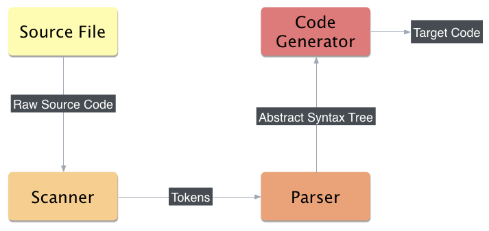

I'm Tom Lee (@tglee)
I work for New Relic
on Mobile & Linux Server Monitoring
We want your braaaains
Racc is Yacc/Bison for Ruby ✔
We are talking about this ...
Rack is web server middleware ✘
... not this.
compilers 101
generalized compiler architecture
about racc
why not yacc/bison?
introducing sucklang®
the end
Translates code in some source language to a target language
(target code is usually semantically equivalent to the source)
Usually via several intermediate steps
aka lexical analyzer or tokenizer
takes raw source code as input
outputs a stream of tokens
takes tokens as input
outputs an intermediate representation
(e.g. an abstract syntax tree)
the parser "makes sense" of the token stream
parsers can be automatically generated from a grammar
programs that do this are called parser generators
Or simply grammar
describes the complete syntax of a (programming) language
usually expressed in Extended Backus-Naur Form (EBNF)
variants of EBNF often used for parser generator DSLs
aka AST
Rooted tree data structure
In-memory representation of the input program
"abstract" in that some detail is omitted
Contrast to a concrete syntax tree
Input: intermediate representation from the parse
Output: code in the target language
(e.g. x86/x64 assembly, C, JVM bytecode, JavaScript...)
For an AST, we will traverse each node in the tree
for each node, emit the corresponding target code

racc is a parser generator
http://github.com/tenderlove/racc
(by the one & only @tenderlove)
write your grammar using an EBNF-y DSL
run racc my_grammar.racc
this generates Ruby code that can parse your "language"
Compilers are fun, dammit.
Fighting with C/C++, Makefiles, etc.?
Not so much.
Let's make it easier to experiment with our crazy ideas!
sucklang sucks by design
call ::= ID "(" ")"(assume ID is /[a-zA-Z_][a-zA-Z_0-9]*/)
ohai()racc tokens are two-element sequences
the first element is the token type
the second element is the token value
(e.g. [:ID, "ohai"])
Let's write a scanner!
now we need to write our racc grammar!
first, make sure you've got racc installed:
gem install racc
invoking racc (I use rbenv):
rbenv exec racc -o lib/sucklang/parser.rb \
lib/sucklang/parser.racchot tip: add this to a Rakefile :)
our parser doesn't output anything yet
let's build an AST!
nearly there! the parser now constructs an AST
let's generate C code for kicks.
More complex grammars!
Symbol tables!
Code generators for different languages!
AST & peephole optimization!
... and all the hard fun stuff :)
New Relic
(my god-like employer)
BRAAAAAINS
http://newrelic.com/about/jobs
Tom Lee
(compiler nerd wannabe extraordinaire)